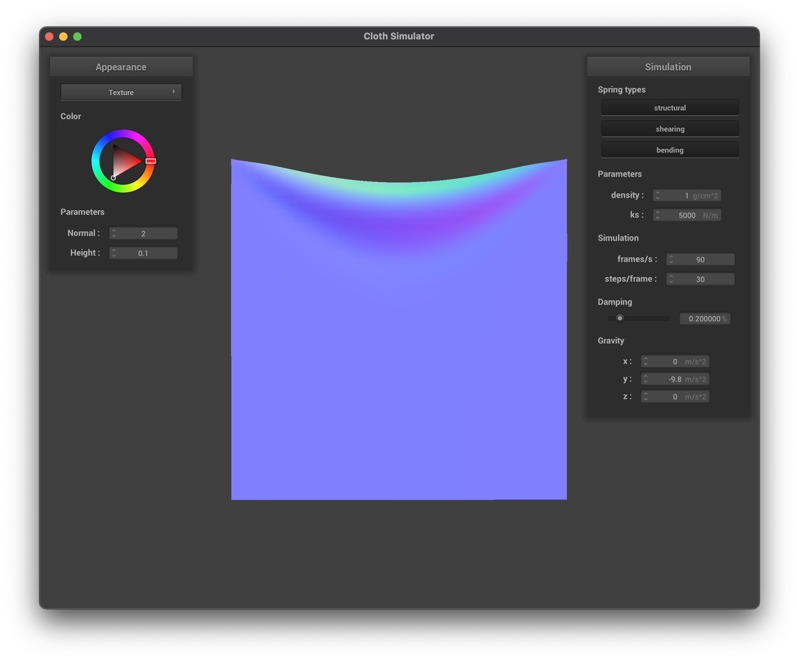
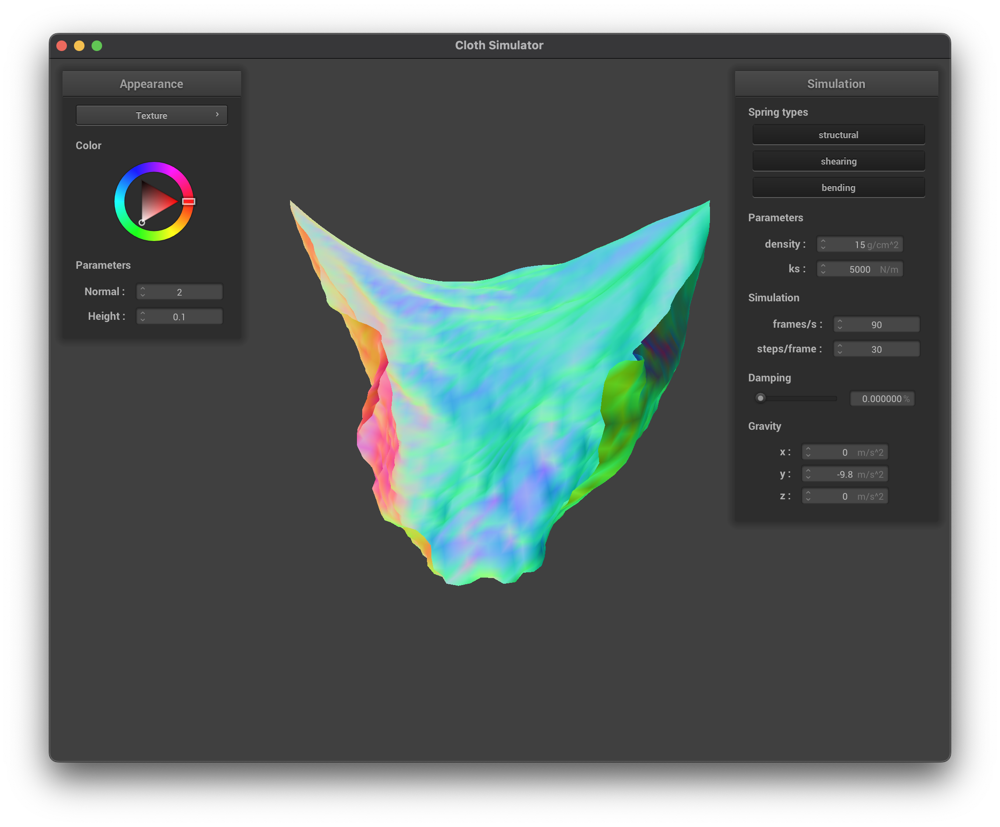
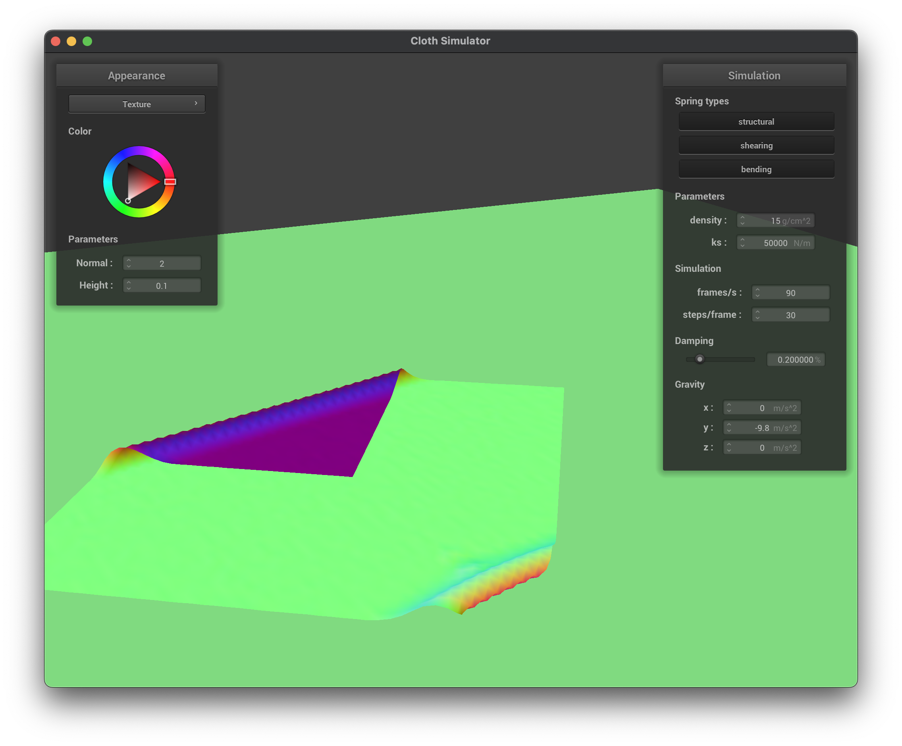
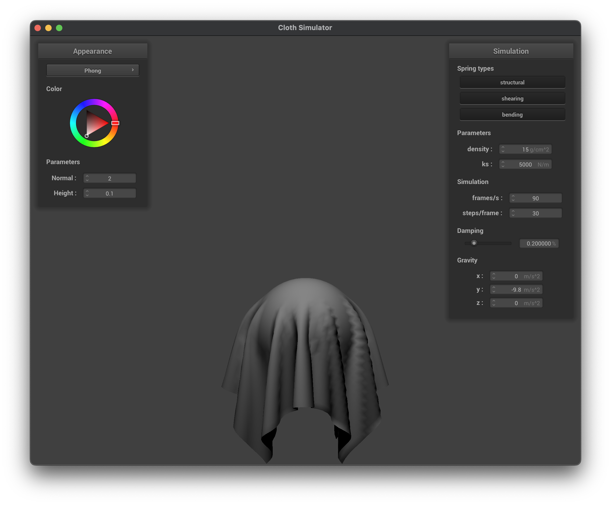

Overview
In this project, we emulate physical simulations of cloth and real world objects. We achieved a cloth’s properties by combining different forces, masses, and springs. We also manipulated the cloth’s physical properties using different parameters such as the spring constant, density, and damping factor which are used in the calculations. After, we went on to simulate the behaviors of self collisions and collisions with other objects in its environment. Finally, we explored the use of GLSL to efficiently create different types of shaders on our cloth, making the cloth more realistic. Overall, it was interesting to understand the underlying properties that objects, like cloths, have and how math and physics can be used to simulate a real life object. It’s interesting how we can use derived formulas to turn something in the real world to technology.
Part I: Masses and springs
Show us what the wireframe looks like (1) without any shearing constraints, (2) with only shearing constraints, and (3) with all constraints.
|
without any shearing constraints
|
with only shearing constraints
|
|
with all constraints
|
Part II: Simulation via numerical integration
Experiment with some the parameters in the simulation. To do so, pause the simulation at the start with P, modify the values of interest, and then resume by pressing P again. You can also restart the simulation at any time from the cloth's starting position by pressing R.
|
5 ks
|
200,000 ks
|
|

1 density
|
2000 density
|
|

0% damping
|
1% damping
|
Describe the effects of changing the spring constant ks: how does the cloth behave from start to rest with a very low ks? A high ks?
A low ks makes the cloth seem loose, flowy, and silky, whereas a high ks makes the cloth seem more rigid, tight, and hard.
What about for density?
By increasing the density, the cloth has less structure. It doesn’t fold on itself anymore, we lose the fold that it has on the top.
What about for damping?
By changing the damping factor, it modifies how fast the cloth comes to a stop. With no damping factor, the cloth constantly moves. With a higher damping factor, the rate the cloth drops is slower as the velocity decreases faster.
For each of the above, observe any noticeable differences in the cloth compared to the default parameters and show us some screenshots of those interesting differences and describe when they occur.
Generally, increasing density and decreasing the ks have a similar effect of making the cloth seem more flowy and less structural. Damping factor affects how the cloth moves.
Show us a screenshot of your shaded cloth from scene/pinned4.json in its final resting state! If you choose to use different parameters than the default ones, please list them.
Part III: Handling collisions with other objects
Show us screenshots of your shaded cloth from scene/sphere.json in its final resting state on the sphere using the default ks = 5000 as well as with ks = 500 and ks = 50000. Describe the differences in the results.
Show us a screenshot of your shaded cloth lying peacefully at rest on the plane. If you haven't by now, feel free to express your colorful creativity with the cloth! (You will need to complete the shaders portion first to show custom colors.)
Part IV: Handling self-collisions
Show us at least 3 screenshots that document how your cloth falls and folds on itself, starting with an early, initial self-collision and ending with the cloth at a more restful state (even if it is still slightly bouncy on the ground).
|
default params, early
|
default params, initial
|
|
default params, rest
|
Vary the density as well as ks and describe with words and screenshots how they affect the behavior of the cloth as it falls on itself.
|
density: 1, early
|
density: 1, initial
|
density: 1, rest
|
|
density: 30, early
|
density: 30, initial
|
density: 30, rest
|
With a lower density, it creates a cloth with less folds on itself than one with higher density. This can be seen as cloths with less density are more rigid and less susceptible to creasing and creating more folds.
|
ks: 500, early
|
ks: 500, initial
|
 ks: 500, rest
ks: 500, rest
|
 ks: 50000, early
ks: 50000, early
|
ks: 50000, initial
|

ks: 50000, rest
|
With a lower ks, it results in more folds on itself than a higher ks. We can see it follows a very similar pattern as above, where the higher ks makes the cloth seem more rigid and, again, less susceptible to creasing.
Part V: Cloth Sim
Explain in your own words what is a shader program and how vertex and fragment shaders work together to create lighting and material effects.
A shader program is a program used to render objects and surfaces in a 3D scene in the graphics pipeline. We use it to calculate the color, light, and darkness of a scene to create an appropriate rendering. During the rendering process, they are executed in the GPU, allowing for parallel processing and computation versus running on a CPU. Two primary shaders used are vertex shaders and fragment shaders. Vertex shaders are applied on each vertex, helping with transformations such as translation, scaling, and rotations, that affect the overall final position and geometric properties of a vertex. Fragment shaders make use of fragments after rasterization and also use the updated geometries from vertex shading to write out a new color for a pixel.
Explain the Blinn-Phong shading model in your own words. Show a screenshot of your Blinn-Phong shader outputting only the ambient component, a screen shot only outputting the diffuse component, a screen shot only outputting the specular component, and one using the entire Blinn-Phong model.
|
ambient
|

diffuse
|
|
specular
|
full Blinn-Phong
|
The Blinn-Phong shading model calculates specular reflection by considering the angle between the viewer/camera and the reflected light direction. Unlike the original Phong model, it introduces a half vector, resulting in more efficient calculations and smoother reflection vectors. This model incorporates ambient, diffuse, and specular light components to create a uniform shader.
Show a screenshot of your texture mapping shader using your own custom texture by modifying the textures in /textures/.
|
custom texture, before
|
 custom texture, after
custom texture, after
|
Show a screenshot of bump mapping on the cloth and on the sphere. Show a screenshot of displacement mapping on the sphere. Use the same texture for both renders. You can either provide your own texture or use one of the ones in the textures directory, BUT choose one that's not the default texture_2.png. Compare the two approaches and resulting renders in your own words. Compare how your the two shaders react to the sphere by changing the sphere mesh's coarseness by using -o 16 -a 16 and then -o 128 -a 128.
|
bump mapping, cloth, -o 16 and -a 16
|
bump mapping, sphere, -o 16 and -a 16
|
|
bump mapping, cloth, -o 128 and -a 128
|
bump mapping, sphere, -o 128 and -a 128
|
|
displacement mapping, cloth, -o 16 and -a 16
|
displacement mapping, sphere, -o 16 and -a 16
|
|
displacement mapping, cloth, -o 128 and -a 128
|
displacement mapping, sphere, -o 128 and -a 128
|
Bump mapping simply maps the textures onto the surface, allowing textures to be visible without affecting the geometry of the surface. Displacement mapping, however, does affect the geometry by also changing the position of the vertices in addition to mapping the textures on the surface, taking into account the height of the texture.
Extreme changes in courses aren’t really visible in bump mapping. However, in displacement it is clear that there are more details in the cloth’s surface that are visible in -o 16 and -a 16 that aren’t as visible with -o 128 and -a 128.
Show a screenshot of your mirror shader on the cloth and on the sphere.
|
mirror, cloth
|
mirror, sphere
|